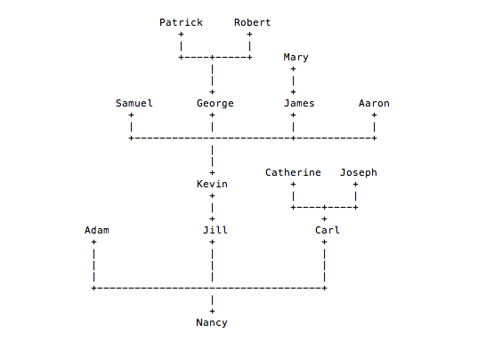

Takehome Assignment - Build Tree Structure
July 7, 2015
This is one of the Takehome Assignment for a full-stack developer position. The assignment was to write a program that can hold family tree like data structure.
What need to be done
There are also requirement of creating a public repository on Github and make regular commits so that we can look at your progress;
TDD - Writing test that covers the script.
Step 1. Think where to begin the challenge
The first challenge I have is understanding 'Tree database structure'.
Step 2. Shop Around
So I found that there is a built in rubyTree gem I can use to cover all requirements. It also have simple tree like drawing functions that I can easily implement to my tree. So what's the downside of it?
The downside is the testing. Most of core functions like determining siblings, parents and root-node are given so TDD is impossible for these. Testing can be only done on the functions that I create.
After playing around a day, I decide to build my own tree-like data structure from scratch. This will be easy. Each node have parent and child variables that I can come up with grand parents and sibling functions.
Step 3. Writing Code
module Tree
class Family
attr :name, :children, :parent
def initialize(name)
@name = name
# @child_hash = Hash.new
@children = []
end
def root
root = self
root = root.parent while !root.is_root?
root
end
def is_root?
@parent == nil
end
def parent=(parent)
@parent = parent
end
end #class ends
end #module ends
So this was easy part. The hard part was to make it search function and creating the relationship of parent - children.
The complete code with rspec is available in my github
Step 4. Optimization and Refectoring the code
1. Data Structure
At first, I created an array and throw all nodes in the array and loop through it to find siblings, grand parents etc. This seems efficient and easy to work with the tree. So why I got rid of it?
: The answer was because of the source of truth for the data. Because the data is two place, one in tree and one in the array, first, it is inefficient to run any function, second, it is duplicate the effort to maintain the data. So I had to change the search function that a) can find the root node and, b) find whatever node it wants to find by following children. It will not save any time but at least I don't have to maintain two sources of data.
2. Same name in the Tree
What's the big deal to have several same names in the tree? Isn't this happen in real life anyway? Well, the current tree search function will only return the first instance (or node) when they find the node with name form the root node. If there are two "Mary"s in the same family, which can be happen in real life, the current tree search function will only return the first "Mary" and then stop looking for it. I could have change the function that returns both Mary nodes but instead, I decide to raise an argument error when there is same name of node added to the tree. This may not be the best solution but at least you can trust the data it provides.
Step 5. Submit the code and wait for the next step
The thing is ... you don't know how well you've done. I'll keep all of ya updated how it goes. GOOD LIGHT!